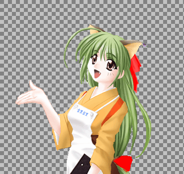

Kirikiri can handle images with alpha channel (transparency) as foreground images. The traditional color key transparency can only handle two states: completely transparent or completely opaque.
By using the alpha channel, you can smoothly blend the edges of transparent and opaque parts with the background, and create translucent parts in the image.

Color key transparency and alpha channel transparency
The left is the color key and the right is the transparency through the alpha channel.
If you enlarge the edge with the transparent part, you can see. On the right side, the ribbon can be made translucent.